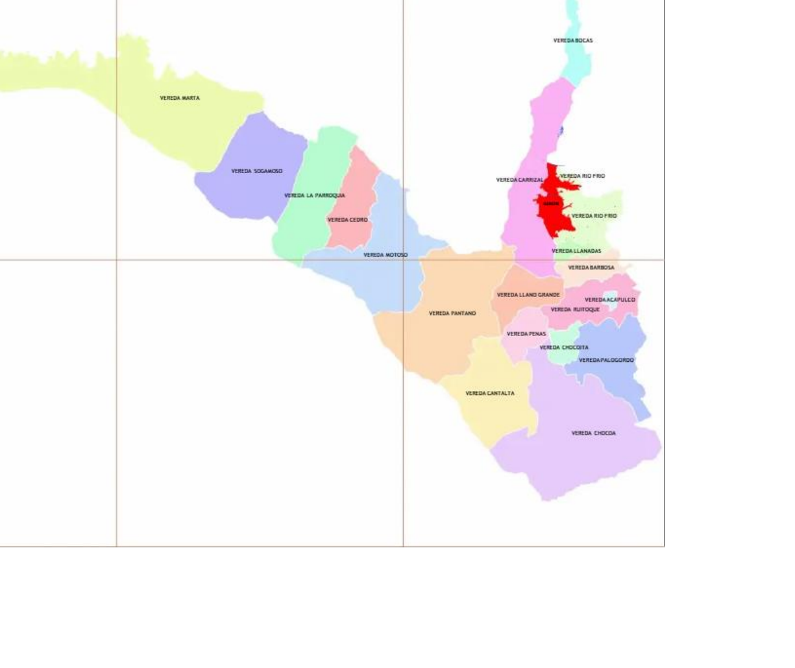
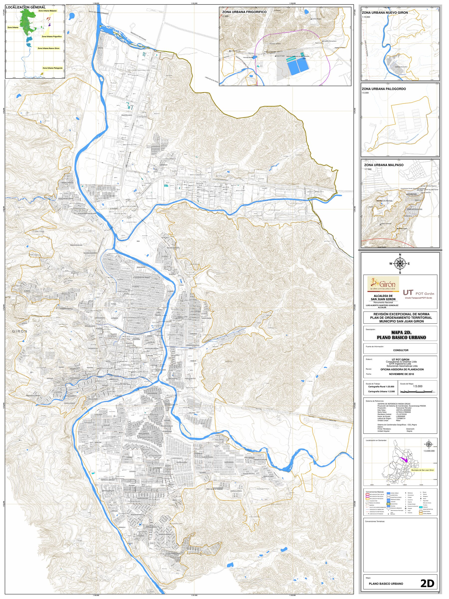

Necesidades por sector
aún
Prioridad territorial
Estado de las necesidades
Próximas acciones
Registro rápido de necesidad
Reporta una necesidad de tu comunidad de forma rápida y sencilla.
Necesidades del territorio
Registro, verificación, priorización y trazabilidad.
Líderes y simpatizantes
Organice la red territorial por líderes y consulte los simpatizantes vinculados a cada uno.
🏢 Directorio Institucional
Identifique entidades, conozca qué puede consultar y prepare mejor su ruta de gestión.
📲 Centro de Comunicaciones WhatsApp
Prepare una comunicación y recorra, uno por uno, los contactos que autorizaron recibir información.
Pulse un grupo para desplegar abajo todos sus contactos autorizados. Luego marque ☑️ las personas que desea incluir en el lote.
Solo se incluyen contactos con autorización registrada y número de WhatsApp. La app no envía mensajes automáticamente: abre WhatsApp con el texto preparado para que usted revise y pulse Enviar.
Proyectos e iniciativas
Vincule necesidades con proyectos existentes o en estructuración.
Gestión y seguimiento
Necesidad + responsable + próxima acción + fecha = gestión.
📅 Agenda de gestión y compromisos
Lo que debemos hacer, lo que está próximo y lo que no puede quedar olvidado.
🧭 Expediente Territorial 360°
Una sola vista para comprender la historia completa de una persona o de un territorio.
🕘 Línea de tiempo
Historia cronológica de la gestión.📌 Estado actual
Lo que está abierto, cumplido o requiere seguimiento.🔗 Relaciones del expediente
Todos los registros conectados con esta persona o territorio.Formulario comunitario
Versión sencilla para presidentes de JAC, ediles y líderes.
🗺️ Mapa territorial interactivo de Girón
Consulte el mapa general del municipio y el plano urbano de barrios de Girón desde un mismo módulo.


🏘️ Barrios urbanos y registros asociados
Busque un barrio y consulte necesidades, líderes y simpatizantes de su base actual.
🌟 Centro de Posicionamiento Territorial
Conocer el territorio, escuchar sus comunidades, organizar la gestión, demostrar resultados y comunicar lo realizado.
Escuchar
Necesidades, comunidades, empresas y actores del territorio.
Gestionar
Seguimientos, compromisos, proyectos y derechos de petición.
Demostrar
Resultados, necesidades solucionadas y memoria verificable de gestión.
Dar a conocer
Convierta la gestión documentada en información pública clara y verificable.
📣 Centro de Posicionamiento Territorial
La información acumulada por la Matriz alimenta diferentes historias públicas. Revise siempre el contenido y las autorizaciones antes de difundir.📍 Huella territorial
Mide actividad y presencia de gestión registrada, no preferencias electorales.📣 Historias de gestión
Seleccione una necesidad para preparar un resumen factual a partir de los datos ya registrados.📣 Mi posición
Convierta una noticia relevante en una pieza clara de opinión para compartir y conservar.
Vista previa
La tarjeta diferencia la referencia informativa de “Mi posición”.🗂️ Archivo de comunicaciones
Histórico de tarjetas generadas desde la Matriz.
🏢 Contando tu historia
Empresas y emprendimientos que generan progreso, empleo y oportunidades para Girón.
Directorio empresarial
Conozca quiénes producen, emplean, sirven y construyen futuro en el municipio.
📊 Inteligencia territorial
Diagnóstico, seguimiento y resultados construidos con la información real de la Matriz.
📊 Diagnóstico territorial de Girón
Necesidades por sector, prioridad y estado.
🗺️ Análisis por barrio / vereda
Seleccione un territorio para conocer necesidades, líderes, proyectos y gestiones.
📈 Gestión y resultados
Ruta de avance de las necesidades registradas.
📄 Informes ejecutivos
Configuración y respaldo
Los datos se guardan localmente en este dispositivo.
Respaldo integral · v1.4.17
Exporte registros, PDF archivados y fotografías en un solo JSON privado. Para cambiar de dispositivo, impórtelo por fusión: nunca se borran los datos existentes. No lo suba a GitHub.
Importación segura: suma registros faltantes, conserva los actuales. Los documentos con el mismo ID nunca se reemplazan.